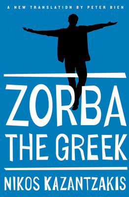
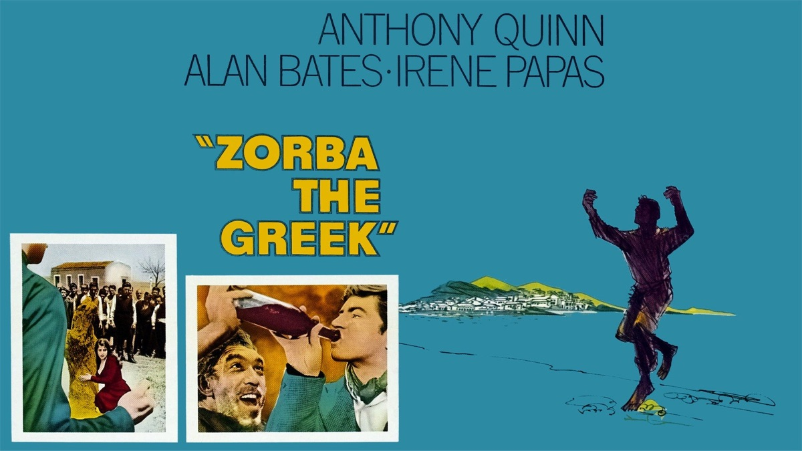
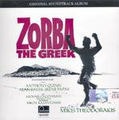

53:20 · 10 OPERE
Zorba il greco: appunti per una filosofia dell’esistenza.
Il filo del discorso
Zorba è presentato come maestro di una sapienza che nasce dalla esperienza e mette alla prova la cultura puramente libresca. Il relatore legge una serie di frasi del romanzo di Kazantzakis e le collega ad atarassia, sguardo di insieme, semplicità, ragione strumentale e rapporto con la morte. Il contrasto fra il minatore e il narratore non è interpretato come rifiuto della intelligenza, ma come invito a non confondere il pensare con il misurare tutto.
Leggi la sintesi completaRiduci la sintesi
La danza diventa una immagine della libertà e della partecipazione alla vita; il tema del dovere è riletto come fedeltà alla propria possibilità di essere. Il percorso accosta Dante, Nietzsche, Shakespeare, Horkheimer, Kant e Platone, senza dimostrare che ogni parallelismo sia una derivazione testuale diretta. La scheda distingue inoltre il romanzo dal film del 1964 e dalla biografia del vero Giorgis Zorbas. Il titolo inglese precede il film, e il Basil inglese appartiene alla trasposizione cinematografica. Nella conclusione, la domanda sulla utilità dei libri si concentra su ciò che aiuta a comprendere la esistenza, compresa la morte: una critica alla lettura che rimane separata dalla vita, non un invito a rinunciare ai libri o alla cura delle persone.
I libri nel discorso

Zorba il greco (Βίος και πολιτεία του Αλέξη Ζορμπά)
Note sul riferimento
Copertina: Originale greco, Atene, Dimitrakos,1946. Copertina Zorba the Greek, Simon & Schuster,23 dicembre 2014,368 pagine, nuova traduzione di Peter Bien. Non è la copertina originale greca mostrata dal relatore, né la edizione Mondadori da lui ricordata.
Copertina autentica della traduzione 2014Peter Bien, verificata nel catalogo editoriale. La fonte del video non permette di assegnare questa traduzione alle frasi inglesi mostrate.
Titolo, autore, prima edizione 1946 e numerosi passi commentati espliciti; lettura selettiva in traduzione.

Zorba il greco (Zorba the Greek,1964)
Note sul riferimento
Locandina del film 1964 dal catalogo del distributore: Film 1964, regia di Michalis Kakogiannis, Anthony Quinn e Alan Bates,20th Century Fox. Locandina orizzontale del catalogo digitale del distributore, con nomi del cast e titolo; non copertina del libro o di una specifica edizione DVD.
Vista interamente la locandina con Anthony Quinn, Alan Bates, Irene Papas, titolo e figura danzante. Non si attribuisce una edizione homevideo, un ISBN o un fotogramma del romanzo.
Film 1964 esplicito, scene di Anthony Quinn e Alan Bates, danza finale; distinto dal romanzo.

Divina Commedia
Note sul riferimento
Copertina: Giunti Barbera · Passepartout, 2021 · edizione di riferimento
Divina Commedia esplicita; il parallelo di Zorba con Virgilio è proposto dal relatore.

Così parlò Zarathustra
Note sul riferimento
Copertina: Adelphi · Piccola Biblioteca Adelphi · riferimento
Immagine associata all’ISBN di riferimento e controllata visivamente; edizione e traduzione non identificate come quelle citate o lette nel video.
Nietzsche e Zarathustra espliciti, proposta una lettura comparata.

Amleto
Identificazione probabile
Note sul riferimento
Copertina: BUR · 2022 · traduzione di Rocco Coronato · illustrazioni di John Austen
Immagine autentica dell’opera, controllata visivamente; non identifica l’edizione usata nel video.
Shakespeare, passo su dormire e nutrirsi, identificato in Amleto IV4; titolo non pronunciato.

Eclisse della ragione. Critica della ragione strumentale
Identificazione probabile
Note sul riferimento
Copertina: Einaudi, Biblioteca Einaudi, 2000, traduzione di Elena Vaccari Spagnol, ISBN 9788806154370. Il titolo è anche catalogato con la variante Eclissi; la copertina acquisita reca Eclisse. Originale inglese Eclipse of Reason, 1947.
Copertina autentica Einaudi bianca con fascia blu, autore, titolo e sottotitolo leggibili. Non è la copertina del diverso Crepuscolo. Il collegamento all’editore Bloomsbury verifica l’opera originale, mentre la copertina italiana proviene da IBS.
Max Horkheimer e analisi della ragione strumentale, allusione probabile all’opera; nessuna edizione identificata.

Zorba’s Dance (Χορός του Ζορμπά)
Note sul riferimento
Copertina dell’album della colonna sonora, contenente Zorba’s Dance: Brano della colonna sonora Zorba The Greek,1964. La immagine è la copertina dell’album contenitore presente nel catalogo del compositore, non un disco autonomo del singolo brano né uno spartito. Il catalogo elenca Zorba’s Dance come traccia6.
Titolo Zorba the Greek e natura di soundtrack leggibili; non si attribuisce un numero di catalogo o una ristampa discografica non verificati.
Mikis Theodorakis, danza di Zorba e musica del film espliciti; fonte ufficiale della colonna sonora 1964.

Fondazione della metafisica dei costumi
Identificazione probabile
Note sul riferimento
Copertina: Laterza · Economica Laterza 122 · Filippo Gonnelli, edizione 1997 e ristampe
Immagine autentica dell’opera, controllata visivamente; l’edizione di riferimento non è attribuita al filmato.
Formula kantiana della massima che possa diventare legge universale; allusione riconoscibile alla Fondazione, senza titolo pronunciato.

Fedone (Phaedo)
Identificazione probabile
Note sul riferimento
Copertina della raccolta The Last Days of Socrates, contenente il Fedone: Copertina della raccolta The Last Days of Socrates, Penguin Classics,29 aprile 2003,304 pagine, traduzione di Hugh Tredennick e Harold Tarrant, a cura di Tarrant. Comprende Eutifrone, Apologia, Critone e Fedone: non è una edizione autonoma del solo Fedone.
Raccolta dichiarata di quattro dialoghi, non volume autonomo del Fedone. La traduzione Perseus Harold North Fowler è una altra fonte e non viene attribuita alla copertina Penguin.
Filosofare come preparazione alla morte, riscontro in Fedone64a–c; titolo non pronunciato.

Apologia di Socrate
Note sul riferimento
Copertina del volume Apologia di Socrate. Critone: BUR · Apologia di Socrate. Critone · a cura di Maria Michela Sassi, 1993
Copertina autentica del volume BUR contenente Apologia di Socrate e Critone. Il secondo titolo non è aggiunto come citazione del video; l’autore del testo è Platone, con Socrate come figura protagonista.
Apologia esplicita e passo sul timore della morte come credere di sapere ciò che non si sa,29a–b.